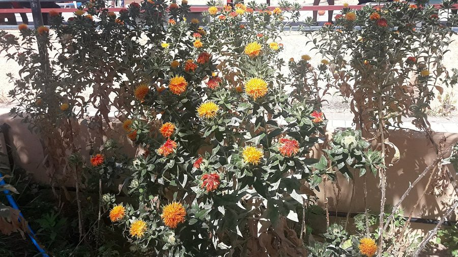

कुसुंभSafflower
Carthamus tinctorius · Asteraceae · FLR-0276

- Scientific name वैज्ञानिक नाम
- Carthamus tinctorius L.
- Family कुल
- Asteraceae
- Hindi हिंदी
- कुसुंभ
- Local names स्थानीय नाम
- kusum, kusumbh, kardi, safflower
- Status here यहाँ की स्थिति
- cultivated
- Movement आवागमन
- Resident, here all year
- Known from कहाँ दर्ज
- Others have published records from the wider Awadh–Purvanchal plain, none yet from Basti–Ayodhya अवध–पूर्वांचल से दूसरों के प्रकाशित अभिलेख, बस्ती–अयोध्या से अभी नहीं
- IUCN IUCN
- not evaluated
- Review समीक्षा
- audited and independently read
When to look कब देखें
Expected mainly in October, November, December, January, February, March. मुख्यतः अक्टूबर, नवंबर, दिसंबर, जनवरी, फ़रवरी, मार्च में अपेक्षित।
Uses and possibilities उपयोग और संभावनाएँ
“Traditional medicine” means a documented traditional use, not a claim that it works. Nothing on this page is medical advice.
Drawn from the documented uses in the profile below, where each is labelled traditional, current or a research lead. All uses →
Tell it apart from इनसे अलग पहचानें
कुसुंभ / Safflower
Carthamus tinctorius L. — Asteraceae
कुसुंभ — एक प्राचीन तेल और रंग की फसल है जो यूपी के सूखे क्षेत्रों में उगाई जाती है। यह एक कंटीली, सीधे बढ़ने वाली, शाखित झाड़ी (40–100 सेमी) है। इसकी पत्तियाँ दाँतेदार और कड़े काँटों से ढकी होती हैं। फूल गोल, बादशाही लाल या सुनहरे-पीले रंग के होते हैं, जो खिले हुए फूलों में से निकलते हैं। इसके बीज सफेद या धारीदार, तेल से भरे होते हैं। स्थानीय लोग इसके फूलों को सुखाकर पीसते हैं और उन्हें खीर, पूरी और अन्य पकवानों के लिए एक सजावटी सुनहरा रंग देने के लिए इस्तेमाल करते हैं। तेल को खाना पकाने में प्रयोग किया जाता है।
Quick Identification त्वरित पहचान
| Feature | Description |
|---|---|
| Form | Erect, branched annual herb, 40–100 cm tall, covered in sharp spines |
| Leaves | Alternately arranged, lanceolate, 2–8 cm long, serrate margins with sharp spines, waxy coating |
| Flowers | Globose flower heads, 1.5–2.5 cm diameter, bright orange-red or golden-yellow florets; thistle-like appearance |
| Bracts | Surrounding the flower head are spiny, leaf-like bracts that extend beyond the flowers |
| Seeds | White or striped, oblong, 0.8–1.2 cm, oil-rich, enclosed in a hard hull |
Field tip: A distinctly spiny herbaceous plant with thistle-like orange-red or golden flower heads surrounded by sharp leaf-like bracts; entire plant is armed with spines.
Morphology आकारिकी
| Feature | Measurement |
|---|---|
| Plant height | 40–100 cm |
| Leaf length | 2–8 cm |
| Flower head diameter | 1.5–2.5 cm |
| Seed length | 0.8–1.2 cm |
| Number of florets per head | 15–25 |
Stem: Herbaceous, ridged, hairy, with prominent sharp spines at leaf bases; branches from lower and middle nodes.
Root system: Deep taproot; drought-tolerant; adapted to arid and semi-arid soils.
Associated Species / Interactions सहजीवी संबंध
- Spiny refuge: The dense spiny foliage provides shelter for small insects and arthropods
- Bee visitor: Flowers are visited by bees for pollen; a modest nectar source
- Seed dispersal: Mature flower heads with spiny bracts stick to livestock and clothing, aiding seed dispersal
- Rotation crop: Grown in rotation with cereals; minimal nitrogen demand
Life Cycle / Phenology जीवन चक्र
- Sowing: Sown in October–November after monsoon; requires field preparation with deep ploughing
- Germination: Emerges within 10–12 days with adequate moisture
- Vegetative growth: Develops leaves and branches in November–December; plant grows slowly in winter
- Flowering: Flower heads open in December–January; flowering is indeterminate, lasting 4–5 weeks
- Seed maturation: Seeds mature within 35–40 days of flower opening; heads dry and become papery
- Harvest: Mature dry heads are harvested in February–March; threshing yields seeds
Pests and Diseases कीट और रोग
- Alternaria leaf spot: Alternaria carthami causes circular brown spots on leaves in humid conditions
- Root rot: Macrophomina phaseolina affects roots in waterlogged soils
- Aphids: Aphis species occasionally infest flowers and young seeds
- Storage pest: Callosobruchus bruchid beetles infest stored seeds; requires airtight storage
Agricultural / Human Relevance कृषि प्रासंगिकता
Oil, dye, and medicinal crop.
- Safflower oil: Seeds are rich in oil, rich in linoleic acid (polyunsaturated fat); oil is used for cooking and cosmetics
- Dye extraction: Flower petals yield two dyes: a water-soluble yellow and an alcohol-soluble red compound (carthamin) historically used for textile dyeing
- Food coloring: Dried flower petals are used as a saffron substitute in rice dishes and sweets ("kusumbh ke ful")
- Traditional medicine: Seeds are considered cooling and used in Ayurvedic remedies
- Cultivars: Varieties include Bhakri, JI-35, and NI-5129
Traditional and Ethnobotanical Use
- Festival use: Dried flowers are scattered on traditional sweets and rice dishes during festivals
- Dye craft: Flower extract produces golden-yellow and orange-red dyes in traditional textile dyeing
- Medicinal properties: Ground seeds mixed with ghee are given for constipation and digestive health
Cultivation Calendar
| Stage | Month(s) |
|---|---|
| Field preparation | September–October |
| Sowing | October–November |
| Vegetative growth | November–December |
| Flowering | December–January |
| Seed maturation | January–February |
| Harvest | February–March |
Expected Locally स्थानीय रूप से अपेक्षित
Not a field record. Written from published accounts for eastern Uttar Pradesh. No confirmed local sighting yet — if you have seen it, that is what the atlas needs.
अभी तक स्थानीय पुष्टि नहीं। यह विवरण प्रकाशित स्रोतों से है, किसी अवलोकन से नहीं।
Carthamus tinctorius is expected as a winter oil and dye crop in Basti district. Look for it in fields from October through March, recognizable by its distinctive spiny appearance and orange-red flowers. The first local record would be a photograph with date and location.
Distribution वितरण
Global range: Domesticated in the eastern Mediterranean and Middle East; now cultivated in semi-arid regions worldwide.
In India: Grown widely in arid and semi-arid tracts; major producers include Rajasthan, Madhya Pradesh, and Karnataka.
In Uttar Pradesh: Grown in plain districts during Rabi season, particularly in areas with lower rainfall.
In Basti district / eastern UP: Cultivated resident; grown on modest acreage for oil and traditional dye use.
Research Questions शोध प्रश्न
- How does the water requirement of safflower compare with mustard and linseed in rainfed winter conditions? / बारिश न होने वाली सर्दियों में कुसुंभ, सरसों और अलसी की जल की जरूरत में क्या अंतर है?
- Can the color intensity of safflower dye be predicted by counting the number of days after flower opening?
- Does soil texture (clay vs. sandy loam) affect the oil content and color of safflower seeds?
- How many flower heads does a single plant produce, and does this vary by planting density?
- Can children separate the golden-yellow florets from spiny bracts without being pricked by hand? — A traditional processing skills activity.
Similar Species मिलती-जुलती प्रजातियाँ
| Species | Key Difference | हिंदी |
|---|---|---|
| Cirsium species (Thistles) | Taller; flowers are smaller and purple-pink; leaves are deeply lobed; wild, not cultivated | जंगली, बैंगनी फूल |
| Onopordum species | Much taller; flower head is larger; leaves are gray-woolly; not cultivated | अधिक ऊँचा, बड़े सफ़ेद बाल |
| Centaurea species | Flowers are smaller; leaves are narrower and less spiny; used ornamentally | छोटे फूल, कम काँटें |
Field rule: A distinctly spiny herbaceous plant with globular orange-red or golden-yellow flower heads surrounded by spiny leaf-like bracts, lacking traditional thistle purple color, distinguishes safflower.
Taxonomy & Classification वर्गीकरण
Original description. Carl Linnaeus described Safflower as Carthamus tinctorius in 1753 in Species Plantarum, Vol. 2, p. 1158. The genus name Carthamus is derived from the Arabic qartam, the name for the plant. The specific epithet tinctorius means "used for dyeing."
Subspecies. Monotypic; no recognized subspecies.
Family and order placement. Order Asterales, family Asteraceae (Compositae), the daisy/sunflower family.
Phylogenetic notes. Carthamus tinctorius is likely derived from the wild species Carthamus oxyacanthus, domesticated in the eastern Mediterranean 4,000–5,000 years ago.
IUCN status rationale. Not evaluated. As a globally cultivated crop, it faces no conservation threats.
Photo Gallery फोटो गैलरी
No photos yet — add field photos to media/species/safflower/ and run node scripts/sync_photos.js.
References संदर्भ
- Linnaeus, C. (1753). Species Plantarum. Laurentii Salvii, Holmiae, Vol. 2, p. 1158. [original description]
- Indian Council of Agricultural Research (2021). Handbook of Oil Crops. ICAR, New Delhi.
- Directorate of Rapeseed-Mustard Research (2018). Production Technology for Safflower. DRMR, Bharatpur.
- Banerjee, P.P. & Rana, R.S. (2015). Safflower production in India: Opportunities and challenges. Journal of Oilseeds Research 22(1): 1–8.
- Botanical Survey of India (2015). State Flora Series: Flora of Uttar Pradesh. BSI, Kolkata.
- GBIF Occurrence Data — Carthamus tinctorius, India (2024–2026).
Source file: species/flora/crops/safflower.md